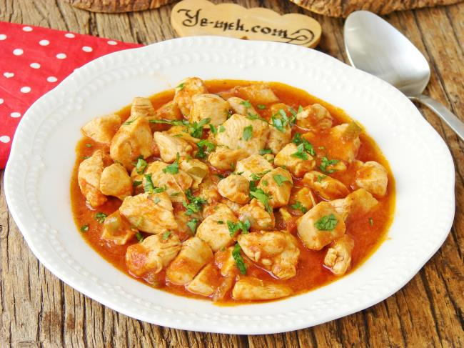

Cenk's Tavuk Sote

The Dish:
Cutting to the chase, here's...
What You'll Need
- 500 grams of chicken breast
- 1 medium size onion
- 2 green peppers
- 2 medium size tomatoes
- 1 tablespoon of tomato paste
- 5 tablespoons of olive oil
- 120mL of hot water (a little more than half the generic glass of water)
- Red pepper flakes
- Black pepper
- Salt
And here's...
The Recipe
- First, cut your chicken breast into cubes.
- Get a medium sized pot on the stove, and heat it well on low heat.
- Add the chicken breast into the heated pot.
- Constantly stir the chicken breast with a wooden spoon until all of the meat changes color.
- Close the lid of the pot, and let the chicken release all of its juices and reabsorb it, stirring it every now and then.
- After the chicken breast has absorbed all of its juices back, add in five tablespoons of olive oil.
- Chop your onion finely and add that into the pot too.
- Always be stirring until the onions get soft and change their color a little.
- After the onion pieces are done with this stage (the Turks call this process you just did on the onion 'kavurmak', and it's a very commonly used cooking term! Might want to get used to it!) and soft, chop your green peppers finely and add them into the pot too.
- Pop Quiz: Kavur the green peppers as well.
- After the peppers too are soft, add in a tablespoon of tomato paste and two finely chopped tomatoes in.
- Constantly stir the tomato paste and tomatoes in (kavur them.)
- Also add in salt, black pepper and red pepper flakes to taste after stirring the tomato paste and tomatoes a bit and keep stirring well.
- Lastly, add the hot water and stir well.
- Close the lid of the pot, and let it cook on medium low heat until it drains some of the liquid. The final product should neither drown in water, nor be devoid of it! Though you can also adjust this to taste if you like it juicier or drier, even though I find the 'perfect spot' to be more appealing, and I think it is also appreciated more by the general Turkish populace.
